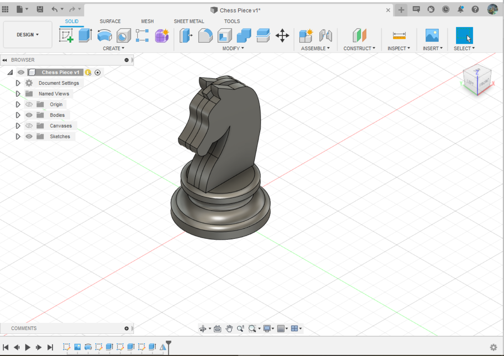

HOW TO DRAW A KNIGHT CHESS PIECE IN FUSION 360
STEP 9 to 12: Sketching the Base and Revolving.
Step 9: On the XZ plane, outline the shape of the horse including its mane. I also use the Spline feature for this.
Step 10: Once drawn, hover oever to the second icon from the left which is the extrude feature and click on the outline you have drawn. Select symmetric for your direction and distance 1mm.
Step 11: Here you can see how the end result should look like. To add the ears other features, we copy the online again but we do not add the mane.
Step 12: Once drawn, extude it again, this time use the 'one way' for direction and 1mm for the distance.
STEP 13 to 16: Sketching the Base and Revolving.
Step 13: On the XZ plane, outline the ear shape of the knight and repeat the extude.
Step 14: The chess knight should look like this after extuding. Next we are going to use the mirror function.
Step 15: Under the create tab near the bottom you should see the mirror option.
Step 16: Select the every Bodies that you have draw by going to the bodies folder and clicking the dropdown. Then selcet your Mirror plane as the other side of the chess piece. They should prewview how it looks like.
Once you are done with step 16, this is how it should look like. Alternatively, if you are looking to add little flare to the Chess piece check out the next page.